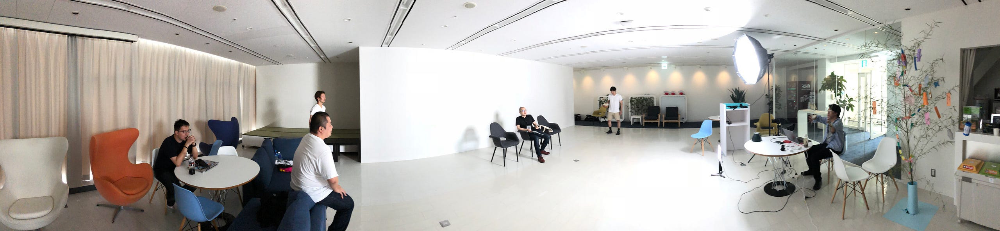
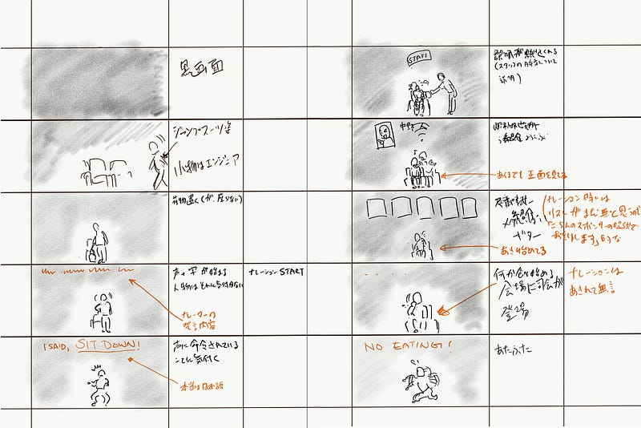
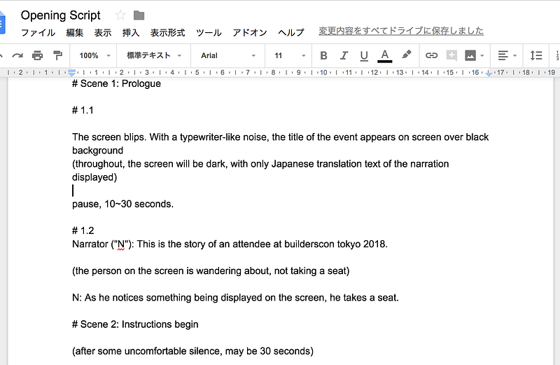
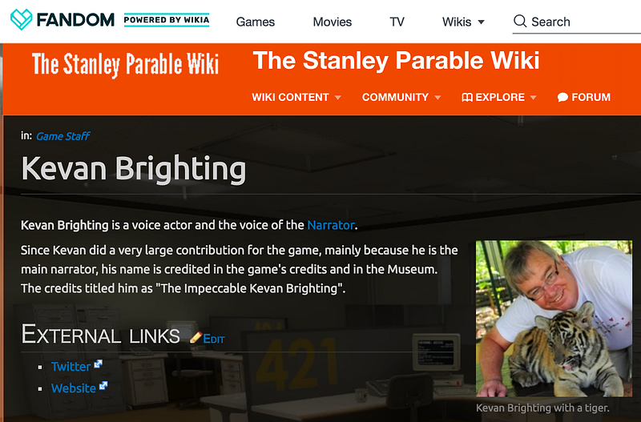
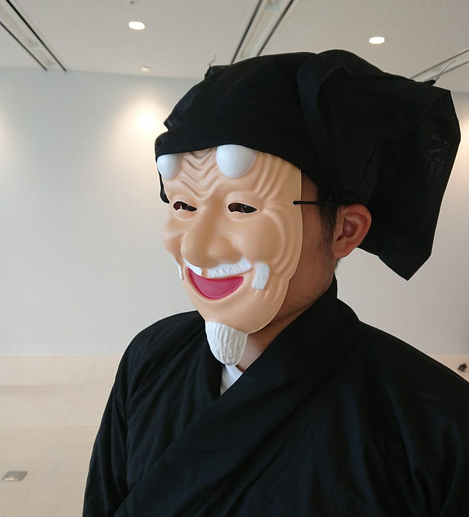
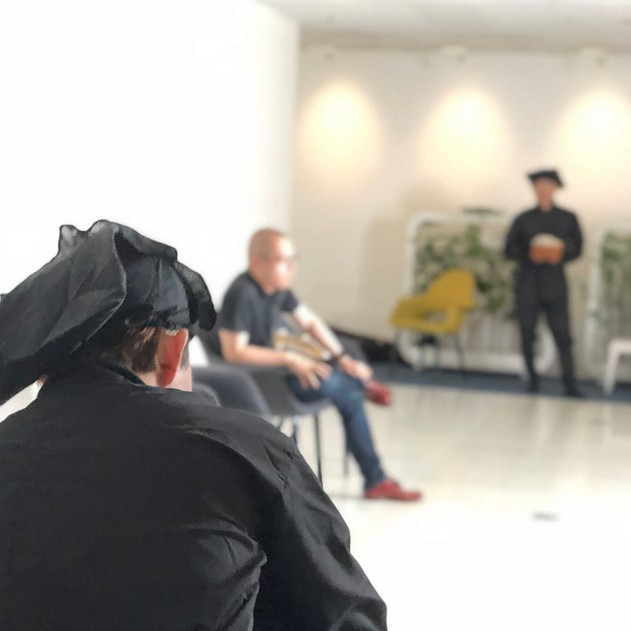
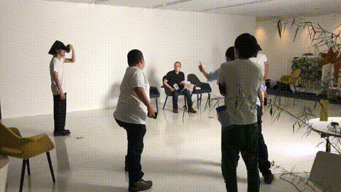
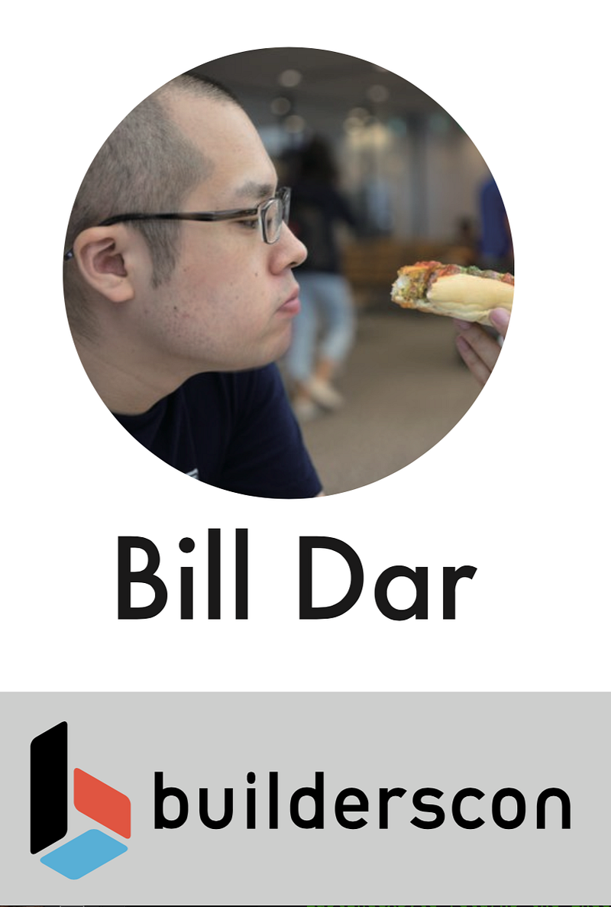

builderscon tokyo 2018 オープニング作成の裏側
builderscon tokyo 2018 オープニング作成の裏側

builderscon tokyo 2018ではオープニングに登壇せず、かわりにオープニングムービーを作る事にした。
カンファレンス運営も10年以上やっていると、オープニングで登壇することに別に喜びはなくなってくる。誤解のないように言っておくと、そりゃ準備してきたカンファレンスがいよいよ始まるので、その分のうれしさはある。けれども、毎回同じような内容を話すしかないので、完全にマンネリなのだ。
本日はご来場ありがとうございますー、スポンサーの皆さんに感謝−、ゲストスピーカーの皆さんに感謝−、注意事項はこれとこれとこれですー… 毎回内容は同じようなものだ。
10年以上オープニングやクロージングをやってきた人はそういないと思うので、共感は得にくいと思うけれども、まぁそういうことなのだ。
ともかく、今回自分は喋らないことを前提に準備を始めた。
そういうわけで、ムービーを作るのだ！
まず、自分で作りたいものをスタッフに説明しないといけない。
2月~3月くらいの時期に、とりあえず頭の中にあるイメージを絵コンテにした。

buildersconにやってきた観客が、謎の天の声に導かれて会場のルールやスピーカーの紹介をうける、というもの。
この企画をやるならちゃんと映像を撮らないといけない。そして自分にはこのあたりの知識がゼロなので、「あとは任せた！」と言って任せられる人が必要だった。
そこで uzullaさんに泣きついたら「デキる人間を知ってる！」ということで早速 kkotaroさんを紹介してもらい、渋谷の居酒屋で「こういうのをやりたいんだ！」と説明した。運良く快諾してもらえたので、あとは脚本やらなにやらを詰めていくだけである。
台本
だいたいどの方向に進むかの共通認識はとれたあとは、とにもかくにも台本がないと始まらない。
一通り自分が書いてから英語堪能なスタッフと何回か練り直し。皆さんに楽しめていただけたかどうかはわからないけど、結構時間かけた。やー、しかし人を笑わせる才能が欲しかったわい…

ともかく自分の中ではそうとうがんばった。この後いくつか撮影に合わせて修正が入れられていった。
会場で見ていただいた人の中で一体何人が分かってもらえただろうか。
実は今回のこのオープニングは”The Stanley Parable”というゲームへのオマージュとなっている。
洋ゲーだしインディーゲームだから日本ではマイナーな部類なので知らない人がほとんどだろう。正直来てもらっている観客の中で分かってもらえるのは100人に一人いれば万々歳かなぁ、と思いながら台本を書いた。
このゲームではプレイヤーは基本行動の自由を与えられているはずなのだけれども、実はナレーションをする天の声はあらかじめ決められた台本に従ってプレイヤーに動いてもらいたいと思っている。
そのため、天の声が意図しない行動をプレイヤーが取ると天の声はそのたびに優しく導いてくれたり、怒ったり、なだめすかしたりしてなんとかプレイヤーを予定調和の方向に進ませようとするのだ。
いわゆる台本通りに動かないとクリアできない予定調和なゲームに対するアンチテーゼ的なゲームである。
今回は、このゲームのような感じでナレーションが入れたかった。
というか、この声が欲しい。
この声優さんに発注しよう！
ということで、まずあの声をやっている声優を捜すところから。ただ、この声はこのゲームを知っている人なら当然気になる人なので、ググったらすぐに正体がわかった。

Kevanさん！で、その後ちょっと調べる必要があったのだけど、とりあえずコンタクトの方法がわかった。絵コンテと台本ラフを送って連絡してみたところ、基本快諾していただけだ。これは嬉しかったなぁ。
取り急ぎ、資料を用意するので録音はまた後ほど、と伝えて待ち状態になってもらったのが4月あたり。
ダミー撮影
声をあててもらうにも、台本だけではタイミングとかのイメージができないだろうということで、5月くらいにダミーの撮影が行われた。ここで突然主演が決まり、最初台本になかった黒子が追加されたり、ストーリーの流れにもいくつか変更がなされた。
（このダミー収録時は自分が台本を読んだのだけど、あとで録画されたものをみたら「プロの声ってすげぇなぁ」という圧倒的な敗北感を後々うけた。いや、まじ声優すげぇわ。）
さらにこのとき黒子の話が出たので、こんな企画がなければ絶対買うことはなかったであろう「黒子衣装」を人生で初めて買った。
カンファレンス運営、こういうムダと思えるものがおもしろい。

ダミーの撮影自体はさくっと終わり、これをKevanさんに送って録音を依頼した。これが6月の始めあたり。
本番撮影
録音してもらった音源はもう最高！としか言いようがない。The Stanley Parableをやったことある人なら「うはー！」と言っちゃうヤツだった。
そしてこれをもっていよいよ本番撮影。
撮影には臨んだ我々素人は監督が持って来たかなりガチ目の機材に少しだけ引いていた。やー、プロってすごいわ…（本稿2回目）
ダミーの撮影が比較的さくっと終わったので、自分はわりと楽勝なんじゃないか？と思って撮影に参加した。
実際、冒頭の部分はサクサクと進んだのだ。だが、黒子の登場で色々予定が変わった。というのも、黒子の役が予想以上に難しい。

黒子は動きそのものとタイミングだけで色々伝えないといけないので、3人が全員うまくできたテイクじゃないと駄目なのだ…
しかも、皆さんお気づきかもしれないが、基本的にこの作品ワンテイク前提なのだ。
有能監督のおかげでなんとか3パーツにわけてもらって編集点を作ってもらったけど、それでもそれぞれのワンテイクが素人には長い。
全て脚本書いた人のせいです。申し訳ない

結果 、最後のテイクが長いわ間違いが起こりそうなところがテイクの最後に集中してるわでかなり辛かった。や、演じてる人達のほうが辛いとおもうけど…
おまけ
ちなみに、主役をやってもらった土居さん、一応劇中では「Bill Dar」（ビル・ダー）さんという役名でした。小さすぎて見えなかったと思うけど、ネームカードにはちゃんとこの名前が印刷されているのでした。

というわけで今回のオープニング動画制作裏話でした。非常に楽しかったのですが、やはりリソースがかかる。また次やるかどうかはわからない。